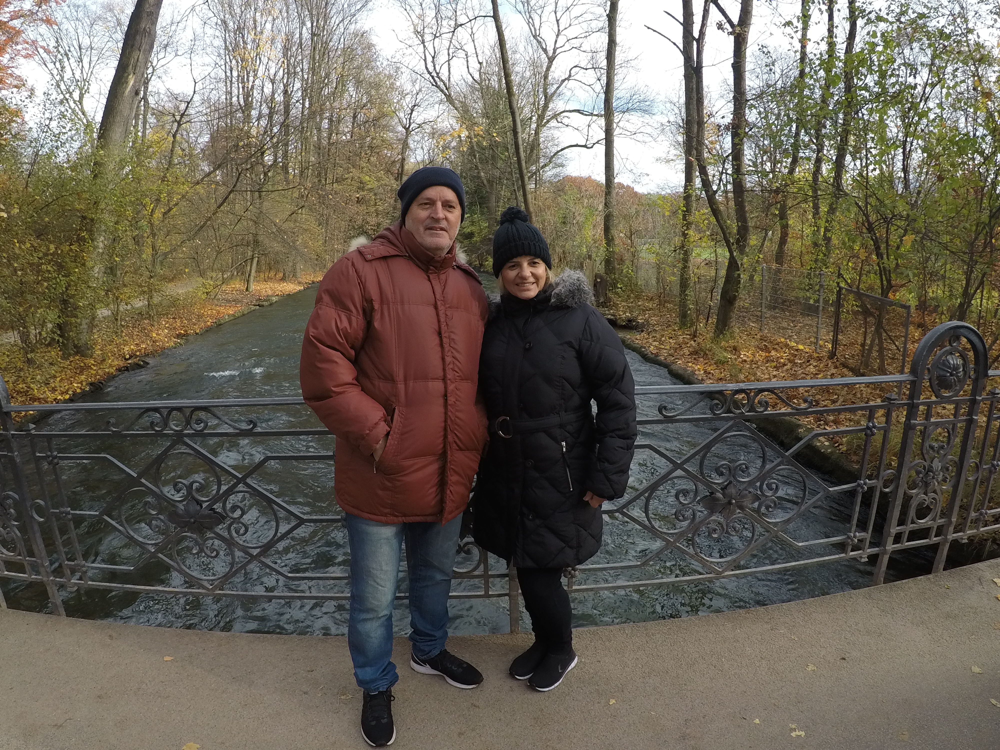

Flávio Lanna
Graduado em Administração de Empresas pela Faculdade de Sabará , possui uma trajetória consolidada em cargos de liderança e gestão operacional. Com vasta experiência em coordenação de equipes, logística e suprimentos , combina competência administrativa com uma profunda paixão por tecnologia, refletida em seu domínio de diversos sistemas e softwares. Ao longo de sua carreira em grandes organizações, como a Belgo Bekaert Arames (ArcelorMittal) e o Carrefour , especializou-se na otimização de processos, gestão estratégica de estoques e excelência no atendimento ao cliente. Atualmente, dedica-se ao aprimoramento de seu perfil proativo através do estudo de novas tecnologias, com foco em desenvolvimento de software e Inteligência Artificial.